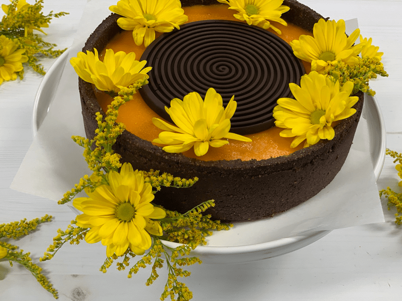
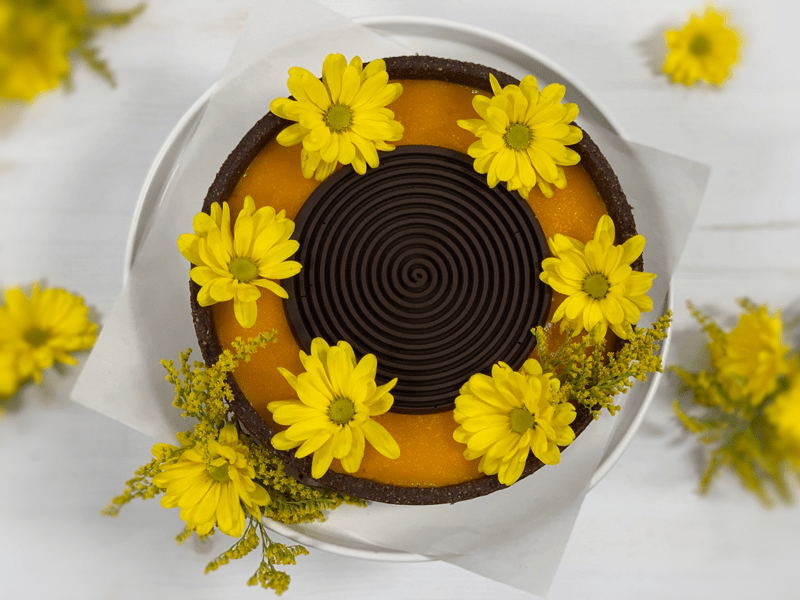
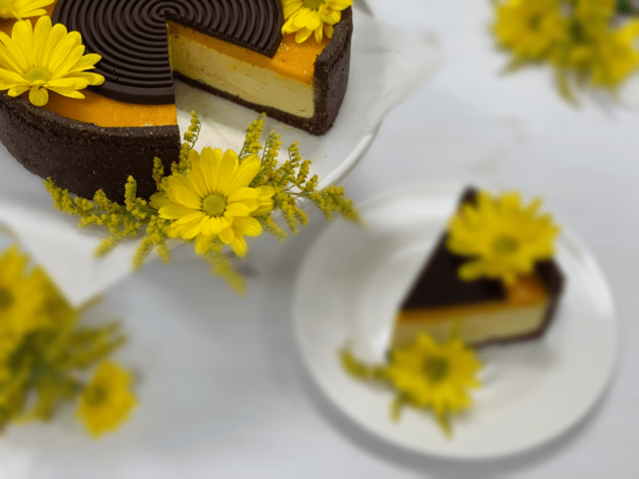
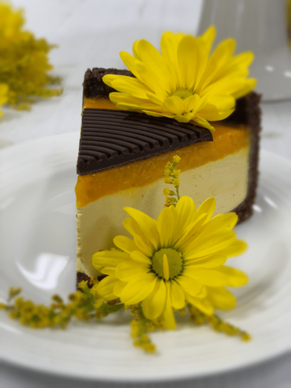

Tropical Mango Cheesecake
This past weekend I was honored in being able to cater a three-day retreat. It was a beautiful time in learning how to really honor ourselves as the special human beings that we are. We practiced a lot of gentle movement through yoga, walks in nature, shared our hearts, danced, spent time relaxing, created vision boards, and partook of scrumptious food.

All of the meals that I prepared were 98% raw. I wanted to make sure that as these ladies filled their bodies with love, acceptance, forgiveness, and respect… that they also filled their bodies with nutrient-dense foods that were light, nurturing, and tongue-tantalizing-taste-bud-exciting! Is that too much to ask of a mixing bowl of ingredients? I think not.
So with a case of mangos sitting on my counter, I just knew that I had to create a cheesecake with them. They were so ripe and fragrant. If you aren’t aware, mangos themselves, blend to a creamy pudding consistency all on their very own. So for the topping of the cheesecake, I literally just poured blended mangos on top. It sets up perfectly, giving structure and beauty to the cake.

Culturing Option
There are two ways that you can go about making this cheesecake. Blend the ingredients as is, or take it one step further by culturing the base of the cake first. This will increase the nutritional value, plus it will give the cake that “cheesecake” tang that we love. I will provide instructions for both ways. It will tack on an extra day of preparation, but this step is well worth it.

Decorating and Pan Size
This cheesecake batter will make a beautiful 9″ springform cake. I made a 6″ cake, along with small individual-sized ones to freeze for later. Feel free to decorate the cheesecake in any fashion that you like. I ended up setting aside a little bit of the crust batter, which I then rolled into little balls to decorate the top with. I also sprinkled a moon-shape layer of shredded coconut on top and drizzled on some raw chocolate ganache. And let’s not forget the fresh flowers. I felt that they really added a spring pop to the cake. Well, I hope you enjoy this recipe. Please comment below. blessings, amie sue

Ingredients:
Yields: 9″ springform pan
Crust:
- 2 1/2 cups (387 g) raw almonds, soaked & dehydrated
- 1/2 cup (45 g) raw cacao powder
- 1/4 tsp (<1 g) Himalayan salt
- 2/3 cup (188 g) Medjool dates, pitted
- 1/4 cup (143 g) maple syrup
- 2 1/2 cups (450 g) young Thia coconut meat
- 2 cups (425 g) organic, diced mango
- 1/4 cup (66 g) Markus Sweet, powdered
- 1 Tbsp (15 g) lemon juice
- 1/2 tsp (2 g) NuNaturals liquid stevia
- 1/4 tsp (<1 g) Himalayan pink salt
- 3/4 cup (153 g) raw cold-pressed coconut oil, melted
- 2 Tbsp (15 g) lecithin, powder
Mango topping:
- 2 mangos (425 g), peeled & seeded
Preparation:
Crust:
-
Assemble a springform pan with the bottom facing up, the opposite way from how it comes assembled.
-
This will help you when removing the cheesecake from the pan, not having to fight with the lip.
-
Wrap the base with plastic wrap. This will make it easier to remove the pie when done… unless you plan on serving the cake on the bottom of the pan.
-
In the food processor, fitted with the “S” blade, process the almonds, cacao powder, and salt until the almonds are broken down into small pieces.
-
Be careful that you don’t over-process the nuts and head towards making a nut butter. Nothing wrong with that… just not our goal at the moment.
-
This ensures that the dry ingredients (spices) get well distributed, so you don’t end up with concentrated pockets of flavors.
-
Add the date paste and maple syrup. Process until the batter sticks together.
-
Depending on your machine, you may need to stop the unit and scrape the sides down during this process.
-
Test the batter by pinching it between your fingers. If it holds, it is ready.
-
Distribute the crust evenly on the bottom of the pan, using even and gentle pressure.
-
Set aside while you make the cheesecake batter.
- In a high-powered blender, combine the coconut meat, mango, lemon juice, stevia, and salt.
- Blend until the filling is creamy smooth. You shouldn’t detect any grit. If you do, keep blending.
- This process can take 1-2 minutes, depending on the strength of the blender. Keep your hand cupped around the base of the blender carafe to feel for warmth. If the batter is getting too warm. Stop the machine and let it cool. Then proceed once cooled.
- You can use a different sweetener if you wish. Just be aware of the different flavors that the sweetener might impart in the cake.
- You can replace the coconut meat with soaked cashews if you don’t or can’t get your hands on young Thai coconut meat.
- With a vortex going in the blender, drizzle in the coconut oil and then add the lecithin. Blend just long enough to incorporate everything together. Don’t over-process. The batter will start to thicken.
- What is a vortex? Look into the container from the top and slowly increase the speed from low to high, the batter will form a small vortex (or hole) in the center. High-powered machines have containers that are designed to create a controlled vortex, systematically folding ingredients back to the blades for smoother blends and faster processing… instead of just spinning ingredients around, hoping they find their way to the blades.
- If your machine isn’t powerful enough or built to do this, you may need to stop the unit often to scrape the sides down.
- Pour the batter into the pan.
- Gently tap the pan on the counter to remove any air bubbles.
- Chill while you blend the remaining mangos.
- In the blender, add the flesh of 2 large mangos. Blend until pudding-like.
- Pour over the top of the cheesecake base and gently spread to cover the whole surface.
- Place in the fridge or freezer for at least 12 hours so the cake firms up all the way through.
- Store the cheesecake in the fridge for 3-5 days, or up to 3 months in the freezer. Be sure that they are well sealed to avoid fridge odors.
FOR CULTURED CHEESECAKES
-
In a high-speed blender, blend the coconut meat to a pudding-like texture. You can add a tablespoon or two of water to help it blend easier.
-
Add the contents of 2 probiotic capsules (toss the gel caps). Blend just long enough to mix the powder in well.
-
Pour into a glass bowl, cover, and allow to culture/ferment.
-
The bowl can be left on the counter for 24 -/+ hours. This process could happen in less time or may take longer than 24 hours. It all depends on how cool or warm your house is.
-
To speed up the process, or a good one to use if your house runs cool… is to place the bowl in the cavity of your dehydrator. Turn the machine on the lowest setting, around 80 degrees (F). Check the culture flavor after 4-6 hours and see if it needs to go longer.
-
Once done culturing, proceed with adding the remaining ingredients and follow the instructions above.
© AmieSue.com